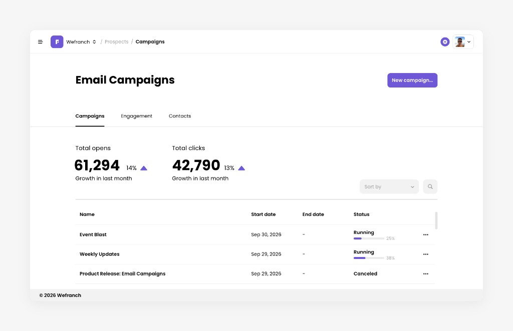

Why are campaigns sent in batches?
How it works
Wefranch sends your campaign in smaller batches spread over time. For domains new to sending campaigns through Wefranch, an automatic warm-up starts with a lower daily sending volume and gradually increases it. During this period, campaigns may take longer to finish sending.

Why we send in batches
Sending too many emails at once can cause email providers to delay or reject messages. Spreading sends over time helps reduce that risk.
Warm-up helps your sending domain build a reputation with email providers by gradually increasing the volume instead of starting with a large campaign.
Batching and warm-up are part of the normal sending process.
What this means for you
- It's automatic. There's nothing to configure.
- Your campaign sends gradually. Some recipients will receive it before others.
- Initial campaigns take longer. During warm-up, fewer emails are sent each day.
- Larger campaigns take more time. Depending on your audience size and current sending limit, sending may continue over multiple days.
Selecting your recipients sets your campaign's audience. Batching and warm-up determine how quickly emails are sent to that audience.